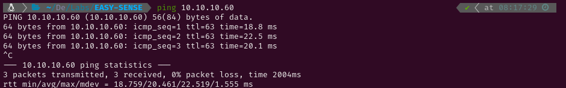

EASY-SENSE
1. Recon
Nmap
I started pinging the target to check if it was a Linux or a Windows system. The Time-To-Live (ttl) was 63, which is very close to 64, so it was a Linux system. Had it been close to 128 (or 128) it would have been a Windows system. After that I conducted an Nmap scan to detect active services on the target using -p- to scan all ports. Given that it was a Hack The Box machine (a controlled environment), I optimized the scan for speed using the following flags: --min-rate 5000, -sS for a SYN scan, -Pn to skip the host discovery stage, -n to skip reverse DNS resolution and -T5 for higher speed.


The scan revealed the following open ports:
- HTTP on port 80
- HTTPS on port 443
Then, I conducted a more thorough scan to those two ports using service version detection (-sV) and the Nmap Scripting Engine (NSE) with default scripts (-sC). I also saved the output for easy reference later (-oN nmap).

Website - TCP 80
After the scan I ran whatweb to check which technologies did the HTTPS service use and tried visiting the webpage to look for web vulnerabilities. The site presented a pfSense login panel.


After some unsuccessful SQL injection attempts and trying default usernames and passwords, I ran gobuster to brute force directory paths. This yielded several results, but most required authentication to access. However, I did manage to access two files: /changelog.txt and /system-users.txt.


2. Gaining access
/changelog.txt contained some credentials which allowed me to log into the pfSense Dashboard. The dashboard indicated that the system was running version 2.1.3. Using searchsploit, I identified a known command injection vulnerability for this version of pfSense.


Upon reviewing the exploit script, I discovered that the vulnerability could be triggered via GET requests to /status_rrd_graph_img.php?database=queues;, allowing for arbitrary command injection.

Knowing that, I tried injecting commands and I found that I couldn´t use some characters like / . However, I managed to use it printing the environment variable $HOME


To gain more control over the target, I wrote a Python script to establish a reverse shell. I launched a netcat listener on port 6666, then served the Python script via the listener. By sending a netcat connection to my listener using |python, the server executed the script, providing me with a reverse shell.


Once connected, I achieved root access on the system and successfully retrieved both flags.